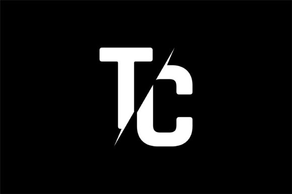

Tommy Cooper

My name is Tommy, and I am a student at Illinois State University with a passion for creating compelling digital experiences. I specialize in animations, game design and development, web design, and audio design.
Throughout my school years, I have been fortunate enough to have had a multitude of opportunities to work on a variety of creative projects. Whether it was in art class, technology classes, or extracurricular activities, I always looked forward to the chance to explore my creativity and produce something unique. As I continued to advance through school, I became increasingly interested in the world of digital design and development. In addition to learning about Adobe Photoshop, Illustrator, and After Effects, I also began to explore other software programs that allowed me to create even more complex digital experiences. One of the programs I learned to use was Unity,In addition to Unity, I also learned how to use Visual Studio, Another software program that I became proficient in was Adobe Audition, Finally, I also learned how to use Autodesk Maya. Overall, my exposure to a wide range of software programs in school has given me the skills and knowledge necessary to bring my creative ideas to life in a variety of digital mediums. Whether it is game design and development, animation, web design, or audio design, I feel confident in my ability to produce engaging and high-quality digital experiences.